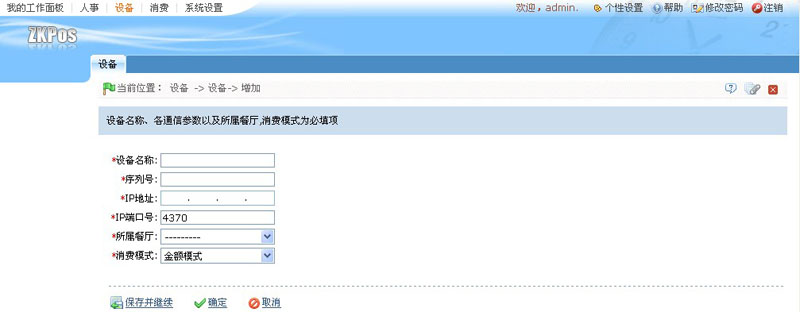
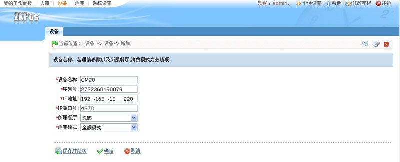
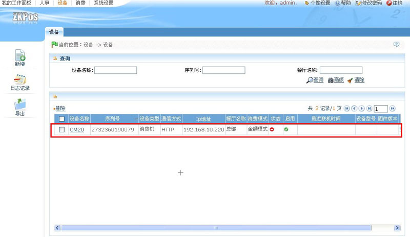
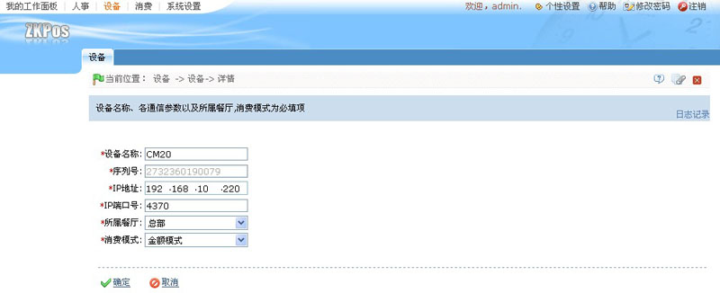
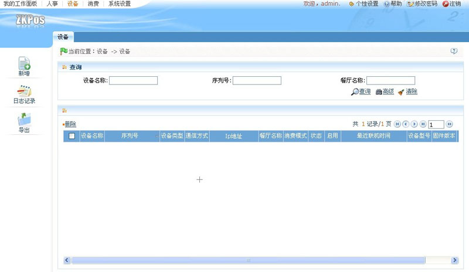

5.1 新增设备
1、单击窗口工具选择栏中的【新增】图标，进入如下图所示的新增设备页面：

设备名称：输入设备的名称。
序列号：输入设备底部标签上所示的序列号，序列号的位置如下图所示：

IP地址：输入设备使用的IP地址。
IP端口号：默认为4370，用户可根据实际情况进行修改。
所属餐厅：单击 按钮，在弹出的餐厅下拉列表中选择餐厅，餐厅的设置请参见6.2.3餐厅资料。
按钮，在弹出的餐厅下拉列表中选择餐厅，餐厅的设置请参见6.2.3餐厅资料。
消费模式：单击 按钮，在弹出的消费模式下拉列表中选择消费模式，可选择为金额模式、键值模式、定值模式、计时模式、计次模式或商品模式。
按钮，在弹出的消费模式下拉列表中选择消费模式，可选择为金额模式、键值模式、定值模式、计时模式、计次模式或商品模式。
@注意：新增设备时需将设备连接至电脑，以便同步消费模式。
选定消费模式后，系统键弹出如下提示框：

提示用户在设置完成后重启设备，以同步设备上的消费模式。单击【确定】按钮，关闭该提示窗口。
2、设备信息设置完成后，若需继续添加则单击【保存并继续】按钮；若无需继续添加则单击【确定】按钮。假设设备信息设置如下图所示：

3、单击【确定】按钮，保存设备信息，并返回设备管理页面，此时该设备信息将显示在设备窗口的设备信息列表显示区中。如下图所示：

注意：新增完设备后，须重新启动该设备，同步设备消费模式。
5.2 设备管理
设备管理包括了设备的编辑和删除，方便用户更好的管理设备信息。
1、设备的编辑
（1）、向右拖动设备信息列表下方的滚动栏，单击相关操作下方的【编辑】按钮，进入如下图所示设备信息编辑页面：

（2）、根据需要修改完设备信息后，单击【确定】按钮，保存修改后的设备信息，并返回设备管理页面。
2、设备的删除
（1）、单击设备名称前面的选择框 ，打钩选中需要删除的设备。用户可同时选中多个设备进行操作，也可单击设备名称列名前面的选择框
，打钩选中需要删除的设备。用户可同时选中多个设备进行操作，也可单击设备名称列名前面的选择框 ，选中所有设备进行操作。
，选中所有设备进行操作。
（2）、选中设备后，直接单击设备信息显示列表中设备名称上方的【删除】按钮。或者向右拖动设备信息列表下方的滚动栏，单击相关操作下方的【删除】按钮，进入如下图所示的删除设备页面：

（3）、单击【确定】按钮，删除选中的设备，并返回设备管理页面，此时设备信息列表中将不再显示该条设备信息，即删除成功，如下图所示：

5.3 设备查询
该窗口的操作同4.1.3部门查询一致，此处不再重述。
5.4 日志记录
单击窗口操作选择栏中的【日志记录】图标，弹出如下图所示的日志记录窗口：

该窗口的操作同4.1.4日志记录一致，此处不再重述。
备注：设备记录的导出方法请参见附录1 常用操作中的5导出，此处不再重述。